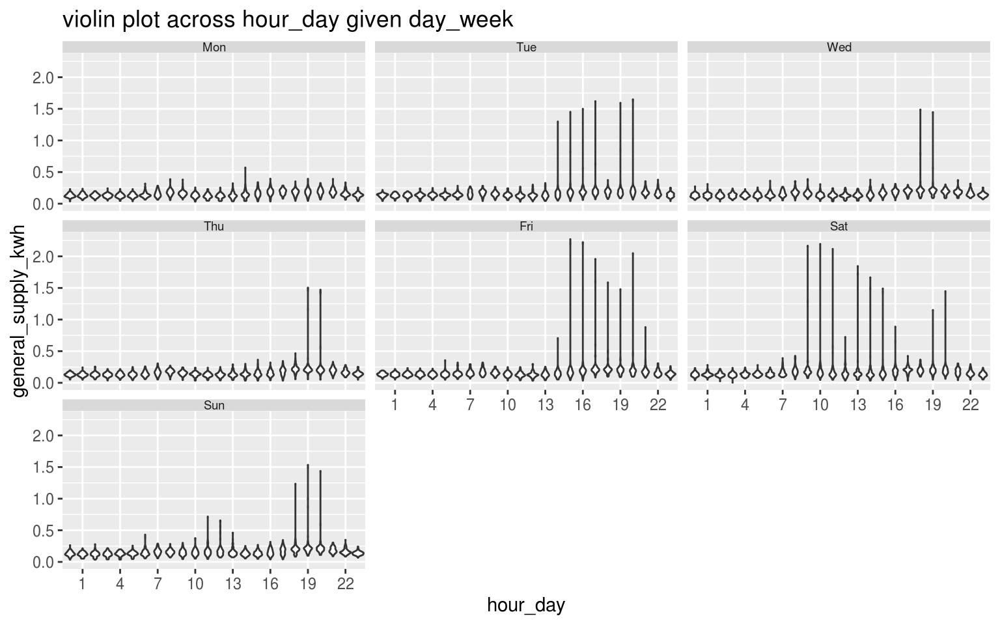
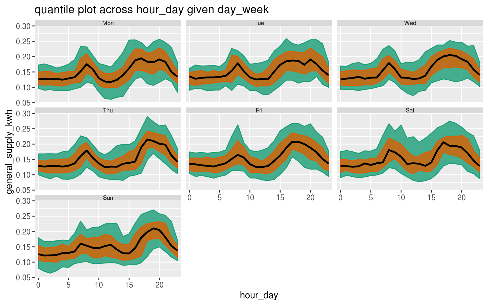
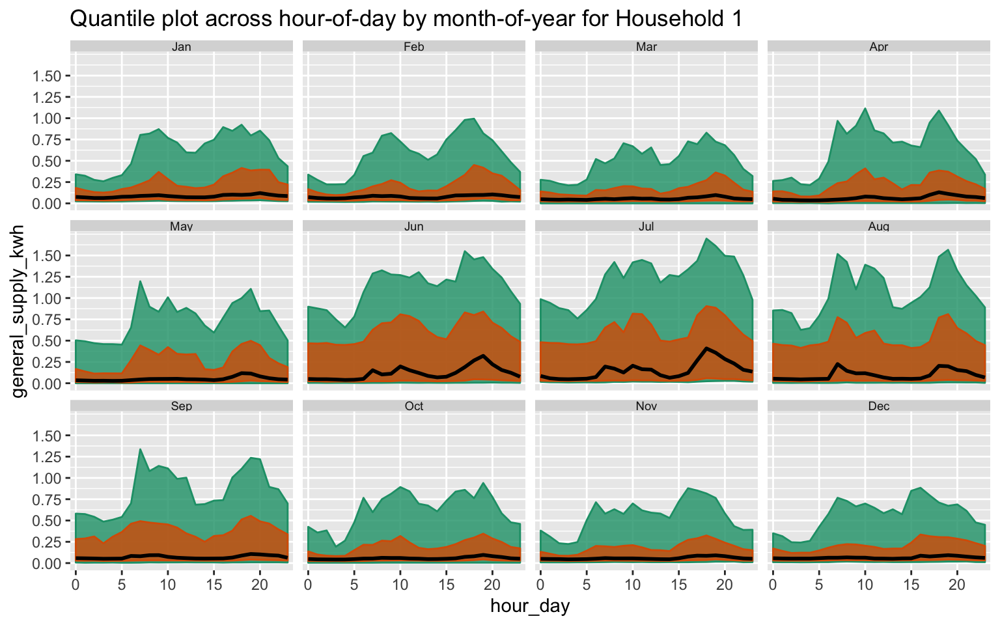
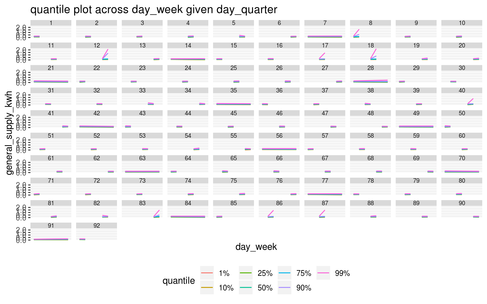
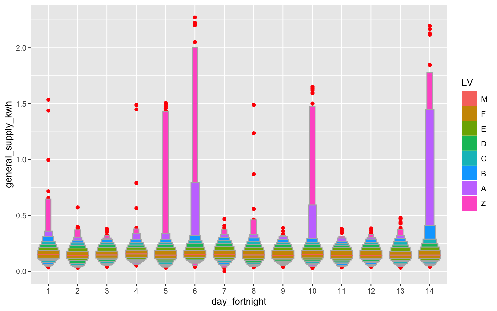

vignettes/gravitas_vignette.Rmd
gravitas_vignette.RmdThe package gravitas provides a tool to examine the probability distribution of univariate time series across bivariate temporal granularities using range of graphics in ggplot2 through the following:
create multiple-order-up circular or aperiodic temporal granularities.
categorize pairs of granularities as either harmony or clash, where harmonies are pairs of granularities that aid exploratory data analysis, and clashes are pairs that are incompatible with each other for exploratory analysis.
recommending appropriate probability distribution plots of the time series variable across the bivariate granularities based on the levels of the bivariate granularties and their compatibility relationship.
One of the customer trials conducted as part of the Smart Grid Smart City (SGSC) project (2010-2014) in Newcastle, New South Wales and some parts of Sydney providing customer wise data is employed to have a run through of this package. The data consists of half-hourly demand general_supply_kwh for more than 40k households across these places. Suppose we want to explore the probability distribution of the energy consumption for these households across different time granularities and identify their behavioral patterns. Data for the year 2013 for one household is used for illustration purposes.
search_gran()
smart_meter_nsw %>% search_gran()
#> [1] "hhour_hour" "hhour_day" "hhour_week"
#> [4] "hhour_fortnight" "hhour_month" "hhour_quarter"
#> [7] "hhour_semester" "hhour_year" "hour_day"
#> [10] "hour_week" "hour_fortnight" "hour_month"
#> [13] "hour_quarter" "hour_semester" "hour_year"
#> [16] "day_week" "day_fortnight" "day_month"
#> [19] "day_quarter" "day_semester" "day_year"
#> [22] "week_fortnight" "week_month" "week_quarter"
#> [25] "week_semester" "week_year" "fortnight_month"
#> [28] "fortnight_quarter" "fortnight_semester" "fortnight_year"
#> [31] "month_quarter" "month_semester" "month_year"
#> [34] "quarter_semester" "quarter_year" "semester_year"search_gran()
The default for search gran in this case, provides temporal granularities ranging from half-hour to year. If these options are considered too many, the default options can be modified to limit the possibilities. For example, the most coarce temporal unit can be set to be “month”.
smart_meter_nsw %>% search_gran(highest_unit = "month")
#> [1] "hhour_hour" "hhour_day" "hhour_week"
#> [4] "hhour_fortnight" "hhour_month" "hour_day"
#> [7] "hour_week" "hour_fortnight" "hour_month"
#> [10] "day_week" "day_fortnight" "day_month"
#> [13] "week_fortnight" "week_month" "fortnight_month"This looks better. However, some intermediate temporal units might not be pertinent to the analysis and we might want to remove them from the list of granularities that we want to examine.
is_harmony()
Now that we have the list of granularities that we want to look at, let us see which pairs form harmony/clash.
harmony()
Or, we can find the set of harmonies all at once with the help of function harmony.
smart_meter_nsw %>% harmony(ugran = "month",
filter_out = c("fortnight", "hhour"),
filter_in = "wknd_wday")
#> # A tibble: 78 x 4
#> facet_variable x_variable facet_levels x_levels
#> <chr> <chr> <int> <int>
#> 1 hour_day hhour_hour 24 2
#> 2 day_week hhour_hour 7 2
#> 3 day_fortnight hhour_hour 14 2
#> 4 day_month hhour_hour 31 2
#> 5 week_fortnight hhour_hour 2 2
#> 6 week_month hhour_hour 5 2
#> 7 fortnight_month hhour_hour 3 2
#> 8 wknd_wday hhour_hour 2 2
#> 9 day_week hhour_day 7 48
#> 10 day_fortnight hhour_day 14 48
#> # … with 68 more rowsprob_plot()
Now, we want to view distribution of the measured variable general_supply_kwh across these bivariate granularities through different distribution plots using prob_plot.
smart_meter_nsw %>%
prob_plot("day_week",
"hour_day",
"general_supply_kwh",
plot_type = "violin") +
ggplot2::scale_x_discrete(breaks = seq(1, 24, 3))
#> The first measured variable
#> plotted since no response variable specified
#> Warning in gran_warn(.data, gran1, gran2, hierarchy_tbl = hierarchy_tbl, : Number of observations for few combinations of
#> granularities vary within or across facets.
#> Use gran_obs() to find combinations which have low
#> observations or very different number of observations.
Suppose, we want a quantile plot, instead of a violin plot for viewing the distribution of energy consumption across similar temporal granularities.
smart_meter_nsw %>% prob_plot("day_week",
"hour_day",
"general_supply_kwh",
plot_type = "quantile", quantile_prob = c(0.1, 0.25, 0.5, 0.75, 0.9))
#> The first measured variable
#> plotted since no response variable specified
#> Warning in gran_warn(.data, gran1, gran2, hierarchy_tbl = hierarchy_tbl, : Number of observations for few combinations of
#> granularities vary within or across facets.
#> Use gran_obs() to find combinations which have low
#> observations or very different number of observations.
This provides an useful warning suggesting quantiles should be computed with caution as number of observations might not be enough for reliable estimates.
Now, we want to view distribution of general_supply_kwh across the another set of harmonies - month_year and hour_day and let the package decide the plot type that is best suitable.
smart_meter_nsw %>%
prob_plot("month_year", "hour_day",
response = "general_supply_kwh",
#plot_type = "quantile",
quantile_prob = c(0.1, 0.25, 0.5, 0.75, 0.9)) +
ggtitle("Quantile plot across hour-of-day by month-of-year for Household 1") +
scale_y_continuous(breaks = seq(0, 1.5, 0.25))
#> Warning in gran_warn(.data, gran1, gran2, hierarchy_tbl = hierarchy_tbl, : Number of observations for few combinations of
#> granularities vary within or across facets.
#> Use gran_obs() to find combinations which have low
#> observations or very different number of observations.
Moving on, if we want to switch the facet and x-axis variable, we simply reverse the order of time granularities. Here, prob_plot would output a ggplot2 object. So we are free to add any element to the default plot.
Suppose, both the granularities chosen have too many levels, which is not suitable for facetting or are clashes, then warnings will be provided.
smart_meter_nsw %>%
prob_plot(gran1 = "day_quarter",
gran2 = "day_week",
"general_supply_kwh",
plot_type = "quantile",
symmetric = FALSE)
#> The first measured variable
#> plotted since no response variable specified
#> Warning in gran_warn(.data, gran1, gran2, hierarchy_tbl = hierarchy_tbl, : Granularities chosen are Clashes.
#>
#> You might be interested to look at the
#> set of harmonies using harmony(data).
The warning says : Facetting not recommended as there are too many categories in day_quarter and also suggest using day_week as the facet variable.
Moreover, the granularities chosen are clashes and one can see the set of harmonies using harmony(.data)
Want to browse through a similar analysis and get insights about the energy behavior of few households? Consider looking at [https://github.com/Sayani07/gsoc2019/blob/master/smart_meter.pdf].
create_gran()
Any granularity can be built using create_gran if any other plots are to explored which is not included in plot_types of gran_plot or for extracting any other summary statistics. They can be also be used for exploring distribution of the time series across univariate temporal granularity.
smart_meter_nsw %>%
create_gran("day_fortnight") %>%
ggplot2::ggplot(aes(x = as.factor(day_fortnight),
y = general_supply_kwh)) +
xlab("day_fortnight") +
geom_lv(outlier.colour = "red", aes(fill = ..LV..)) + scale_color_brewer(palette = "Dark2")
Recommendations for distribution plots depend on the levels of the two granularities plotted. They will vary depending on which granularity is placed on the x-axis and which one across facets. Assumptions are made to ensure display is not too cluttered by the space occupied by various kinds of distribution plots. Moreover, the recommendation system ensures that there are just enough observations before choosing a distribution plot.
Levels are categorized as very high/high/medium/low each for the facet variable and the x-axis variable. Default values for these levels are based on levels of common temporal granularities like day of the month, day of a fortnight or day of a week. For example, any levels above 31 is considered as very high, any levels between 14 to 31 are taken as high and that between 7 to 14 is taken as medium and below 7 is low. 31, 14 and 7 are the levels of days-of-month, days-of-fortnight and days-of week respectively. These default values are decided based on usual cognitive power while comparing across facets and display size available to us.
prob_plot choose the recommended plots only if plot_type = NULL. Warnings are generated if users try to plot clashes, number of facet variables are too high or number of observations used to compute statistical summaries for distribution are not large enough.
Thanks to Prof. Rob J Hyndman, Prof. Dianne Cook and Prof. Antony Unwin for their support and always leading by example. The fine balance of encouraging me to work on my ideas and stepping in to help when I need has made the devlopment of this package a great learning experience for me.